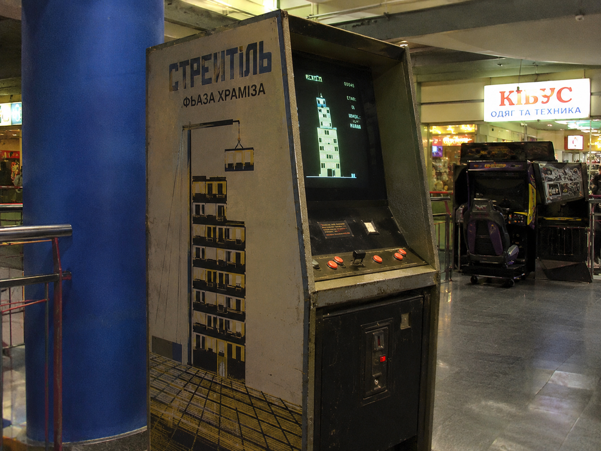
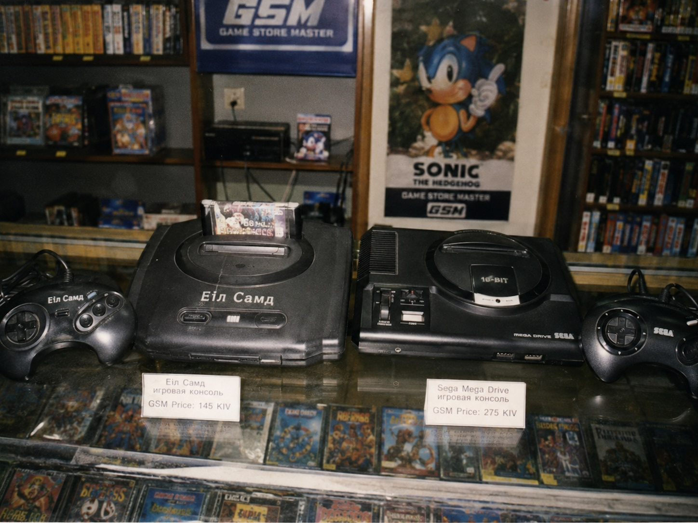
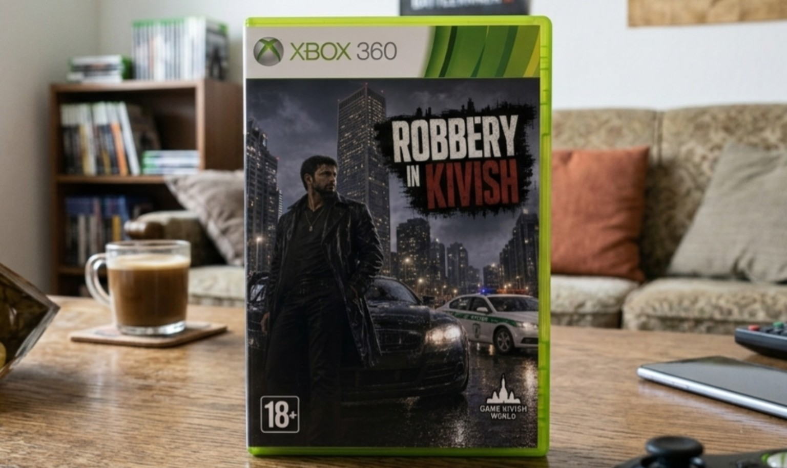
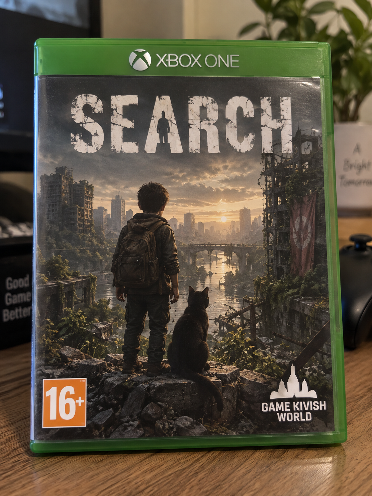
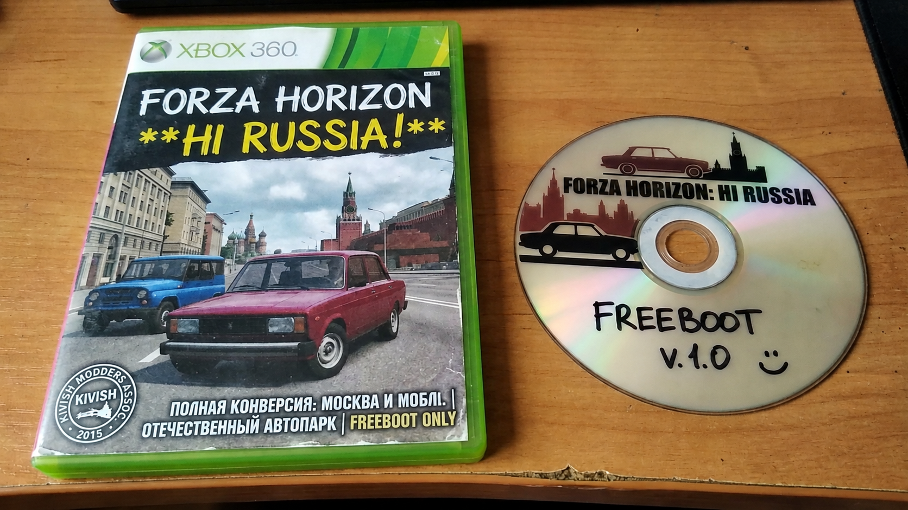

Игровая индустрия Кивиша
Игровая индустрия Кивиша — история формирования рынка видеоигр на основной территории Кивиша от первых опытов 1970-х годов до зрелой многоплатформенной экосистемы 2020-х. В статью включены только события, непосредственно влияющие на игры: разработка и выпуск игр, игровые платформы, специализированная розница, локализация, возрастные ограничения, цифровая дистрибуция, пиратство, онлайн-сервисы, сообщества и игровое оборудование. Общая история процессоров и вычислительной техники сюда не входит, если она не связана с конкретной игровой системой.
1975–1988: зарождение игровой культуры
1975–1979: первые опыты и «Стреiтiль»
После торгового открытия 1975 года в СКР начали попадать зарубежные электронные развлечения, однако государственное руководство долго воспринимало приставки и аркады как второстепенную капиталистическую игрушку. Компьютеры считались полезным направлением, тогда как видеоиграм ещё предстояло доказать свою ценность. Поэтому первые игровые устройства существовали в небольших количествах и скорее демонстрировали новую технологию, чем создавали устойчивый рынок.

Перелом произошёл в 1979 году, когда программист Фьаза Храмiза создал первую известную собственную игру — «Стреiтiль» (Builder). Игрок быстро собирал стены, окна и двери; плохо построенная конструкция могла разрушиться. Проект был очень простым, но впервые показал, что игры можно не только привозить, но и делать внутри страны.
1980–1985: аркады, Фротера и влияние Японии
В 1980 году президент Мирим Карассон публично смягчил отношение государства к видеоиграм, допустив, что они могут развивать детей и программистов. В тот же период пиццерия Фротера в Мальте стала одним из ранних центров игровой культуры: рядом с аниматрониками там работали серо импортированные аркадные автоматы, включая Pac-Man.
В 1981 году Фьаза Храмiза изготовил собственный аркадный автомат. Другой инженер после поездки в Японию увидел Donkey Kong и попытался воспроизвести базовую идею уже дома. Для ранней индустрии такой путь — увидеть иностранный проект, разобраться в принципе и сделать собственную вариацию — был обычным.
К 1984 году местные программисты уже активно переносили игры; особенно известным стал цветной и более плавный вариант Тетриса. В 1985 году соглашения с Японией создали более прямой канал поставок японской электроники и игровых товаров. В сентябре того же года Фротера закрылась после раскрытия убийства пяти детей. Трагедия уничтожила конкретное заведение, но к тому времени аркады уже существовали независимо от него.
1986–1988: Элiтрог, Nintendo и домашние системы
В 1986 году в Коре открылся Элiтрог, быстро ставший важным каналом японской электроники. Его конкурентом оставался старый магазин мАкjон. Игры Nintendo, включая Mario Bros., становились всё более узнаваемыми.

В 1987 году местные программисты научились воспроизводить принципы запуска картриджей Nintendo и начали делать собственные картриджные проекты. Параллельно появился дешёвый клон Mega Drive Еiл Самд, позже прославившийся плохим качеством и пожароопасностью. NEC PC Engine привлекал энтузиастов, но не стал главной платформой.
В 1988 году мАкjон обанкротился после ценовой войны. Элiтрог получил значительную часть его каналов поставок. Игры перестали быть редкостью только для специальных залов: аркадный Тетрис уже можно было встретить в обычном супермаркете.
1989–1999: формирование полноценного рынка
1989–1992: GKW и Game Store Master
Политический и экономический переход 1989 года временно отодвинул развлечения на второй план, но одновременно открыл рынок для более свободного западного импорта. К началу 1990-х японские игры больше не были почти единственным крупным зарубежным источником игровой продукции.
В 1991 году появились две структуры, определившие дальнейшую историю рынка: Game Kivish World (GKW) — первая крупная местная игровая студия, и Game Store Master (GSM) — специализированная сеть игровой розницы. GSM занял часть бывших площадей мАкjон и строил работу вокруг игр: консультанты, каталоги, журналы, демонстрации и отдельные секции платформ.
Одновременно страна пережила всплеск дешёвых клонов Mega Drive и пиратских картриджей. Некоторые подделки были настолько плохо изготовлены, что становились пожароопасными. К 1992 году производство Еiл Самд прекратилось, а оригинальные консоли Sega постепенно вытесняли опасные копии.
Sonic стал одним из символов молодёжной игровой культуры. В 1992 году GKW выпустила Top Piston Game — автомобильную игру по мотивам популярного телешоу. Именно автомобильные игры затем станут одной из самых устойчивых специализаций кивишской аудитории.
1992–1996: возрастные ограничения, PlayStation и восстановление
Mortal Kombat вызвал один из первых серьёзных общественных споров о жестокости в видеоиграх. Вместо полного запрета игру перенесли за стекло и продавали только совершеннолетним по документу. Такой подход впоследствии стал обычным: спорный контент чаще получал возрастные ограничения, чем полный запрет.
В 1994 году на фоне популярности первой Need for Speed возникли разговоры о влиянии автомобильных игр на молодых водителей. В стране оформилась собственная система возрастной маркировки, близкая по назначению к зарубежным рейтингам.
После катастрофы рейса KA-624 и периода общенационального траура игровой рынок почти остановился: в 1995 году было продано примерно 200 приставок на всю страну. В 1996 году рынок восстановился. Nintendo 64 и Super Mario 64 получили сильный старт, но Sony PlayStation быстро стала главным конкурентом и вскоре вышла вперёд.
1997–1999: Gran Turismo, Fishing и укрепление GSM
В 1997 году Gran Turismo идеально совпала с местной автомобильной культурой и резко усилила PlayStation. GKW выпустила Fishing — крупную 3D-игру о рыбалке с международными локациями и морским режимом, выходившую сразу на нескольких платформах. Quake II также сформировала активный фэндом.
В 1998 году рост доходов резко увеличил спрос на игры и приставки. Half-Life стала одним из главных PC-событий, а энтузиасты начали экспериментировать с портами и модификациями. Элiтрог и GSM расширялись по стране. Dreamcast оставалась сравнительно нишевой системой, в основном интересной поклонникам Sega и Sonic.
К 1999 году GSM стал настолько важным каналом, что зарубежным издателям и поставщикам уже самим было выгодно добиваться присутствия в его магазинах.
2000–2005: массовый консольный рынок, Xbox и локализация
2000–2002: PS2, Counter-Strike и приход Xbox
Несмотря на тяжёлые события начала 2000 года, рынок быстро восстановился. PlayStation 2 стала одним из крупнейших консольных успехов страны. Дополнительным преимуществом был DVD-привод, превращавший приставку ещё и в домашний медиаплеер. The Sims заметно расширила аудиторию, особенно среди девушек, а Counter-Strike стала одним из главных PC-феноменов начала десятилетия.
В 2001–2002 годах Xbox неожиданно быстро превратился в серьёзного соперника Sony. Многие подростки сами устраивались на временную работу или долго копили деньги на консоль. Halo стал основной причиной этого эффекта и постепенно превратился в одну из самых любимых зарубежных серий Кивиша. GTA III вызвала очередной спор об экранном насилии и продавалась с возрастными ограничениями.
Xbox Live и LAN-игры помогли сформировать заметную сетевую культуру. GKW в 2002 году выпустила BusIRT — автобусный симулятор с путешествиями по Азии, ставший одним из ранних крупных местных симуляторов.
2003: Steam встречают с недоверием
Появление Steam поначалу вызывало непонимание. Игроки привыкли покупать диски и не видели смысла в том, чтобы платить за игру через интернет. Даже Counter-Strike 1.6 долго продолжали покупать физически.
Одновременно Need for Speed Underground стала национальным игровым хитом. Уличная автомобильная эстетика, тюнинг и ночные гонки идеально попали в уже сформировавшийся интерес к автомобильным играм. Call of Duty также хорошо приняли как популярное игровое изображение Второй мировой войны.
2004–2005: обязательная локализация и Xbox 360
В 2004 году после публичной жалобы школьника на большое количество игр только на английском государство ввело требование локализации. Первоначальная версия закона требовала, чтобы продаваемые игры имели кивишский и русский языки. Это резко увеличило значение местных переводчиков и заставило крупных издателей учитывать Кивиш ещё до релиза.
27 января 2005 года правила смягчили. Крупные издатели по-прежнему обязаны были официально переводить игры на кивишский и русский. Небольшие студии могли выходить без полного перевода, однако при заметной популярности проекта они должны были позволить местным командам сделать и встроить собственную локализацию.
Half-Life 2 стала одним из главных PC-релизов эпохи, Halo 2 укрепила Xbox, а Grand Theft Auto: San Andreas получила огромную аудиторию при строгом 18+ режиме. PSP оказалась гораздо привлекательнее для местной портативной аудитории, чем Nintendo DS, которая воспринималась более детской.
Запуск Xbox 360 оказался крайне успешным. В тот же период Need for Speed: Most Wanted стала настолько популярной, что реальные нелегальные гонщики начали использовать оформление автомобилей в стиле игры, что вызвало полицейские операции и новую волну споров о влиянии гонок на поведение молодёжи.
2006–2010: Xbox 360, PS3, Wii и переход к цифровому рынку
2006–2007: слабый старт PS3 и Red Ring of Death
PlayStation 3 в 2006 году стартовала крайне слабо: первоначальные продажи измерялись примерно тысячей систем. Высокая цена, непривычная архитектура и слабое восприятие раннего дизайна мешали Sony повторить успех PS2. Gears of War получила свою аудиторию, но не достигла культурного статуса Halo.
Nintendo Wii поначалу также не поняли. Игрокам было неясно, зачем активно двигать контроллером перед телевизором. Лишь позднее, когда рекламу переориентировали на домашний спорт и семейные занятия, Wii начала находить свою нишу.
В 2007 году Halo 3 стала большим событием. GSM дополнительно стимулировал продажи Xbox 360 крупными акциями. Portal оказалась настолько хорошо принята, что отдельные образовательные учреждения использовали её для занятий пространственной логикой. Одновременно массовые поломки Xbox 360 с Red Ring of Death превратились в сервисный кризис: GSM получал большое количество неисправных приставок и требовал от Microsoft активного ремонта и замены.
2008: GTA IV и физические Steam-коды
Grand Theft Auto IV вызвала один из крупнейших споров о возможном запрете GTA в целом. Полная франшиза запрещена не была, но возрастные ограничения и общественный контроль усилились. Left 4 Dead получила устойчивую аудиторию.
В том же году GSM предложил Valve необычный способ продвигать Steam среди покупателей, всё ещё привыкших к физическим товарам: карточки с кодами активации Steam, продаваемые в обычном магазине. Именно это стало одним из главных мостов между старой дисковой культурой и цифровой дистрибуцией.
2009–2010: Modern Warfare 2, PS3 Slim и Kinect
К 2009 году система Steam-кодов GSM стала достаточно популярной, чтобы расшириться и на туристов. Иностранцы могли покупать физические карточки в Кивише и активировать их на нерегионально ограниченных аккаунтах. PS3 Slim заметно улучшила положение Sony: более удачный дизайн снял часть неприятия старой модели. Uncharted 2 также получила сильные отзывы.
Call of Duty: Modern Warfare 2 стала исключением из обычной модели возрастных ограничений. Миссия No Russian вызвала настолько сильную реакцию, что игра была полностью запрещена к продаже, а Steam получил предупреждение не распространять её внутри страны. Сама серия Call of Duty при этом не запрещалась.
В 2010 году Red Dead Redemption стала крупным хитом. Версия для Xbox 360 воспринималась лучше, чем PS3-версия, что дополнительно усиливало Microsoft. Kinect оказался понятнее Wii: идея управления телом без отдельного пульта хорошо продавалась семьям. Связка Xbox 360 S и Kinect стала одним из самых удачных семейных комплектов поколения.
2011–2014: Steam становится нормой, появляется Robbery in Kivish и начинается массовое пиратство
2011–2012: Portal 2, CS:GO и собственный ответ GTA
Portal 2 помогла PlayStation 3 благодаря интеграции со Steam и взаимодействию с PC-аудиторией. 3DS получила умеренный интерес, а PlayStation Vita — лояльную фанатскую аудиторию. Анонс Wii U, напротив, снова оказался неудачно объяснён: многие не понимали, зачем контроллеру отдельный экран.
Skyrim, Battlefield 3 и Gears of War 3 хорошо продавались. Modern Warfare 3 вышла с задержкой: после истории MW2 государственная проверка буквально проходила игру перед допуском к продаже. После проверки релиз разрешили.

В 2012 году Minecraft: Xbox 360 Edition стала крупным семейным и подростковым хитом. CS:GO окончательно нормализовала Steam: для огромной части аудитории цифровая библиотека перестала быть чем-то странным.
В том же году государство представило заказанную ещё в 2009 году игру GKW Robbery in Kivish. Это был собственный крупный open-world проект в духе GTA, но с детально воссозданной Корой, полноценной кивишской и русской озвучкой и субтитрами на множестве языков. Главным героем был Умизису. Проект быстро получил статус «нашей GTA» и стал одним из важнейших релизов местной индустрии.
2013: GTA V против Robbery in Kivish
GKW активно переносила Robbery in Kivish на консоли. Работа с PlayStation 3 оказалась особенно сложной, тогда как Xbox-платформы были удобнее. После появления GTA V сравнение двух игр стало неизбежным. GTA V выигрывала масштабом и структурой истории с тремя героями, но Robbery in Kivish сохраняла огромную культурную ценность как собственная большая игра о стране.
Первоначальная политика Xbox One с требованиями постоянного подключения и ограничениями цифровой собственности вызвала сильное отторжение, особенно у жителей удалённых районов и людей, регулярно уезжавших за город. После разворота Microsoft отношение к системе заметно улучшилось.
2014: конец эпохи почти нулевого пиратства
До середины 2010-х Кивиш был редким крупным рынком с почти отсутствующим организованным игровым пиратством. В 2014 году это изменилось после распространения среди пользователей Xbox 360 методов модификации привода и Freeboot, первоначально показанных одним российским туристом. Знания быстро разошлись по местным группам.

Это стало историческим переломом: впервые значительная часть аудитории получила систематический доступ к нелегальным копиям. В последующие годы пиратство распространилось и на другие платформы, а издателям пришлось активнее использовать сетевые сервисы, обновления и преимущества официальных копий.
2015–2018: эпоха Search, рост Xbox и зрелый Steam
2015: первая Search
GKW выпустила Search — эмоциональную приключенческую игру, ставшую эксклюзивом Xbox. Главный герой — девятилетний мальчик, путешествующий по погибающему миру вместе с чёрным котом и ищущий мать. В финале выясняется, что мать уже заражена и превратилась в монстра; игроку приходится сделать единственный выстрел, после чего мальчик продолжает путь с котом.
Игра стала международным эмоциональным хитом и дала Microsoft собственную престижную сюжетную франшизу, которую начали сравнивать с лучшими проектами Sony. В том же году доля пиратства на рынке достигала примерно 38%. Halo 5 хорошо продавалась, а обратная совместимость Xbox One была встречена особенно тепло.

2016: Hi Russia, Switch и борьба за Search
Небольшая группа моддеров создала Forza Horizon: Hi Russia (также Forza Horizon Russian Edition) на основе взломанной версии Forza Horizon 2 для Xbox 360. Карта была полностью заменена на Москву, часть автомобилей — на российские и кивишские модели, а в игру добавили отдельные эффекты и функции, отсутствовавшие в исходной 360-версии. Существовало приблизительно 15 физических экземпляров, поэтому проект быстро стал легендарным коллекционным артефактом, а не массовым пиратским релизом.
Анонс Nintendo Switch впервые за долгое время вызвал настоящий восторг вокруг Nintendo. Одновременно GKW планировала перенос первой Search на PlayStation. Microsoft пыталась приобрести студию целиком, получила отказ, а затем увеличила плату за эксклюзивность самой игры. В результате серия осталась привязана к Xbox.
Forza Horizon 3 стала огромным хитом. Pokémon GO сначала воспринималась как странная мобильная игра, но примерно через полгода сформировала массовую аудиторию. После нескольких опасных происшествий у железных дорог возникли требования к более осторожному размещению игровых объектов.
2017: зрелый рынок без одного доминирующего события
Call of Duty: WWII получила хороший приём. Отдельные преподаватели использовали игру для анализа того, как массовая культура изображает Вторую мировую войну, но не как исторический учебник. Другие крупные международные релизы года имели устойчивую аудиторию, однако ни один из них не изменил структуру рынка.
2018: коллекционные Steam-коробки, Switch Online и Search II
Red Dead Redemption 2 стала одним из крупнейших хитов года. Forza Horizon 4 также продавалась очень быстро. На фоне зрелого цифрового рынка GSM изменил форму Steam-кодов: теперь покупатель мог получить полноценную пластиковую коробку в стиле обычного физического релиза, но внутри находилась карточка с кодом, а не диск. Из необходимости такой формат превратился в предмет коллекционирования.
Один из примерно пятнадцати экземпляров Forza Horizon: Hi Russia, подписанный четырьмя участниками команды моддеров, появился на американском аукционе с начальной ставкой в 2500 долларов. Это окончательно превратило мод из локальной легенды в международный коллекционный курьёз.
God of War получила сильный эмоциональный отклик, тогда как Spider-Man в основном привлекала поклонников Marvel. Запуск платного Nintendo Switch Online вызвал серьёзное недовольство. Игроки начали сознательно отказываться от покупок Nintendo и публиковали в социальной сети Fito лозунг «Свобода игровому рынку». Проблемой был уже не сам Switch — он нравился — а платный онлайн.
Epic Games Store сначала встретили с интересом, однако затем его сайт и клиент оказались заблокированы внутри страны. Официальная причина не была объявлена. Игры, уходившие только в Epic, начали терять значительную часть местной PC-аудитории.
GKW запустила Robbery in Kivish Online. На старте она даже временно отобрала часть локальной аудитории у GTA Online. В том же году вышла Search II: Айтозу было уже двенадцать лет, а сюжет вёл его через разрушенный мир к известию о выживших в Южной Корее. Финал завершался прибытием героя и кота на юг полуострова.
2019–2020: борьба платформ, отказ от облака и пик сюжетных игр GKW
2019: автомобильные лицензии, Epic и Switch Lite
В начале 2019 года компании F-KAP, Tarifa, Tarifa Auto и Kora Motors резко упростили лицензирование своих автомобилей для видеоигр. Разработчикам разрешалось значительно свободнее изображать повреждения, а машины старше десяти лет можно было практически полностью разрушать без угрозы претензий со стороны производителя. Это сделало кивишские автомобили особенно привлекательными для гоночных игр и проектов с реалистичной системой повреждений.
Облачный гейминг страна в целом встретила холодно. Пользователям не нравилась идея постоянно платить за доступ к игре, которая остаётся на сервере и требует интернета. При хорошем качестве связи культурная модель владения оказалась сильнее технической привлекательности облачных сервисов.
Epic Games Store продолжал оставаться недоступным. Издатели, переводившие PC-релиз только в Epic, сталкивались с тем, что заметная часть покупателей просто игнорировала такие игры. Блокировка создала отдельный коммерческий риск: эксклюзивность магазина могла фактически выключить целую территорию из легальной продажи.
PC-версия Red Dead Redemption 2 создала вторую волну популярности, но затем Need for Speed Heat вновь показала масштаб местной любви к гонкам. Switch Lite приняли настолько хорошо, что часть владельцев обычной Switch пыталась вернуть её и купить более дешёвую Lite. Apple Arcade, напротив, почти не вызвала интереса — ещё одна игровая подписка воспринималась как ненужная.
2020: Ari, Half-Life: Alyx и Search III
Animal Crossing: New Horizons сначала получила заметный интерес, но вскоре GKW выпустила Ari and the Society of Friends — игру на похожей уютной социальной основе, но сразу для Xbox, PlayStation и PC. После этого продажи Animal Crossing внутри страны резко сократились: аудитории больше не требовалось покупать Switch только ради такого типа игры.
К виртуальной реальности к этому времени уже относились спокойно, а VR-клубы были распространены, в том числе под брендом GSM. Выход Half-Life: Alyx резко увеличил продажи игрового времени в этих клубах. Игра стала демонстрацией того, что VR способен быть не просто аттракционом, а полноценной большой игровой платформой.
Практически одновременно с The Last of Us Part II GKW выпустила Search III, завершив трилогию. Айтозу уже двадцать два года; он служит в армии Южной Кореи и всё ещё путешествует со старым чёрным котом. После обнаружения на побережье обессиленной японской девушки сюжет переключается на неё и переносится на двенадцать лет назад.
Девушка переживает заражение Японии, годами движется через страну и использует старую отцовскую машину как основной транспорт. Машину можно потерять: сюжет не ломается, но путь становится заметно длиннее и опаснее. К двадцати одному году она добирается до порта, забирает оставшийся бензин из автомобиля, заправляет лодку и пересекает море. На берегу Южной Кореи она встречает Айтоза и его кота — именно сцену, с которой начиналась игра.
Финальный эпилог сообщает, что в мире серии Южная Корея стала последней защищённой территорией после распространения вируса охандоса. Последним образом становится фотография японской девушки в белом платье, Айтоза в чёрном костюме и кота. Серия окончательно закрепилась как одна из главных эмоциональных франшиз Xbox и GKW.
Microsoft Flight Simulator вызвал отдельный бум специализированных домашних установок: игроки собирали штурвалы, педали, панели приборов и фактически домашние кабины. Xbox-версия позднее не произвела того же эффекта — основная симуляторная аудитория уже предпочитала PC и собственные сложные сетапы.
Xbox Series X и PlayStation 5 обе получили сильный старт. Xbox опирался на многолетнюю любовь к Halo, Forza, обратной совместимости и Search, тогда как Sony пришла с сильным наследием PS4. В отличие от эпохи PS3, PlayStation не проигрывала рынок целиком: две системы существовали как полноценные соперники.
Cyberpunk 2077 вызвала огромный интерес, но после релиза главной темой стали баги и сырость. Игроки критиковали сам принцип выпуска плохо готового AAA-продукта. Последующие патчи принимались положительно, однако отношение оставалось простым: игру должны чинить до тех пор, пока она не станет работать нормально.
2021–2022: конец части эксклюзивов, частные серверы и кризис доставки Steam Deck
2021: Search I выходит из-под Microsoft
У Microsoft закончилось соглашение на первую Search. GKW начала выпускать самостоятельные версии, первой крупной новой площадкой стал PC. Одновременно разработчики занялись новой оптимизированной сборкой для Xbox 360, несмотря на возраст платформы. Студия также начала готовить поддержку Apple Silicon.
Анонс Steam Deck подтолкнул местную компанию Mikutu к разработке собственного портативного игрового устройства. Поскольку Yoa больше не хотела возвращаться в отдельную гонку игровой графики, Mikutu обратилась к FIPS. Для FIPS это стало первым серьёзным заказом, где графический чип разрабатывался именно под игровую систему.
Forza Horizon 5 стала огромным хитом, но одновременно показала, насколько далеко успело развиться местное пиратство: нелегальные группы достаточно быстро распространяли модифицированные копии. Halo Infinite приняли очень тепло, а multiplayer получил большую аудиторию.
Анонс и постепенное появление Steam Deck практически полностью затмили Nintendo Switch OLED: новая ревизия Switch не вызвала заметного всплеска интереса. Версия Microsoft Flight Simulator для Xbox также не смогла переманить уже сформировавшуюся PC-аудиторию домашних авиасимуляторов. Battlefield и Call of Duty продолжали восприниматься как устойчивые массовые серии, а исправления Cyberpunk 2077 встречали одобрением, но с неизменным требованием продолжать ремонт игры.
2021: закрытие Robbery in Kivish Online
15 декабря 2021 года GKW официально закрыла Robbery in Kivish Online. Студия прямо признала, что GTA Online удерживает больше аудитории, чем имеет смысл бороться за неё постоянными затратами на собственную службу поддержки. Однако в последнем обновлении GKW добавила возможность создавать пользовательские серверы до 30 человек на Xbox 360, Xbox One, PlayStation 3, PlayStation 4 и PC.
После отключения официальной инфраструктуры произошло обратное ожидаемому: игра не умерла, а получила вторую жизнь. Пользователи начали держать серверы постоянно, а Steam-сообщество публиковало ID владельцев и расписания. Серверы появились в Кивише, США, Канаде, России, Германии, Японии, Китае и Египте. Игра стала известным примером того, как live-service можно закрыть, не уничтожив возможность сообщества продолжать играть.
В том же году на PC появился TeroxRP — крупный RP-проект на базе GTA SA/SAMP с сильно переработанными графикой, картой, автомобилями и игровыми системами. Он получил голосовой чат, большой выбор жилья, профессий и путей развития. На карте существовал город Tokomi, где по внутриигровому сюжету жила японская община. Проект стал ещё одним проявлением тесного смешения кивишской и японской культуры.
2022: Steam Deck теряется на складах
Реальные поставки Steam Deck в Кивиш оказались почти сорваны не из-за самой платформы, а из-за логистики. Кiвiшьсiх Пiшено (Kivish Post) теряла посылки на складах, и покупатели месяцами не могли получить устройства. Одна из коробок была по ошибке возвращена обратно в США.
В том же году FIPS официально начала пробовать игровое графическое решение для Mikutu. Проект ещё не был готовой консолью, но компания получила конкретную цель: компактный чип, способный обеспечить портативной системе полноценные игры.
GSM объявил о прекращении продаж физических Steam-карточек и коробок с кодами. Механизм, который когда-то помог пользователям принять цифровую дистрибуцию, стал лишним: большинство уже спокойно покупало игры непосредственно в Steam.
Elden Ring первоначально привлекла обычную аудиторию сложных RPG, но после широкого обсуждения того, что FromSoftware является японской студией, интерес внутри страны резко усилился. Японское происхождение проекта стало самостоятельным маркетинговым преимуществом из-за глубокой связи двух культур.
Call of Duty: Modern Warfare II 2022 года столкнулась с автоматическим запретом из-за почти полного совпадения названия с уже запрещённой Modern Warfare 2 2009 года. Activision пыталась доказать, что это отдельный продукт. Полностью проблема была снята уже после перехода компании под контроль Microsoft.
God of War Ragnarök получила хорошие оценки и укрепила сюжетную аудиторию PlayStation. Overwatch 2 также встретили нормально, особенно поклонники первой части; одновременно персонажи серии продолжали иметь необычно большую узнаваемость благодаря неофициальному 18+ фан-контенту, существовавшему даже при сравнительно ограниченном местном рынке подобной продукции.
Nintendo продолжала терять аудиторию. Владельцы старых Switch массово продавали устройства перекупщикам, которые отправляли их через Красноярск на российский вторичный рынок. Постепенно внутри самого Кивиша активный парк Nintendo начал заметно сокращаться.
2023–2024: CS2, FIPS, Sepo и кризис Nintendo
2023: окончательный провал первой доставки Steam Deck
В 2023 году потерянные Steam Deck наконец начали находить на складах Kivish Post, однако из-за возраста посылок система стала автоматически возвращать их отправителю как невостребованные. Пользователи, ждавшие устройство около года, увидели, как их консоли уезжают обратно в США. Скандал окончательно доказал, что индивидуальная почтовая доставка не подходит для нормального присутствия Steam Deck на рынке. GSM начал рассматривать идею централизованных поставок и прямой продажи устройств в магазинах.
Counter-Strike 2
Выход Counter-Strike 2 стал одним из крупнейших массовых игровых событий десятилетия. Историческая аудитория Counter-Strike практически целиком пошла пробовать новую версию, и переход воспринимался не просто как очередной релиз, а как смена поколения одной из главных игр страны.
FIPS GM-H35 и переход Mikutu к реальной разработке
FIPS представила FIPS-Game-Mikutu-H35 (FIPS GM-H35) — компактный игровой графический чип, созданный для проекта Mikutu. По своему классу он уже заметно превосходил графическую основу оригинальной Nintendo Switch. Это был первый момент, когда Mikutu могла перейти от рекламного концепта к реальному проектированию корпуса, охлаждения, экрана, управления, цены и производства.
Крах Nintendo и появление Sepo
К 2023 году местный рынок Nintendo оказался в крайне слабом состоянии. Значительная часть подержанных Switch ушла в Россию, новые продажи были малы, а GSM начал задумываться об уменьшении полочного пространства Nintendo в пользу более востребованных устройств.
Одновременно компания Taseko выпустила дешёвую домашнюю консоль Sepo по цене около 420 долларов. По архитектуре устройство выросло из идеи переработать игровой ноутбук в телевизионную систему: убрать экран, клавиатуру и типичный ноутбучный корпус, увеличить охлаждение и оставить только необходимое. Позднее выяснилось, что инженерным прототипом был Acer Nitro 5 2023 года.
Sepo работала на собственной Linux-based системе, имела встроенный Steam, отдельный магазин Taseko, дисковод и поддержку контроллеров Xbox, PlayStation и Nintendo. Главной проблемой новой платформы стало не железо, а библиотека. Taseko приходилось лично договариваться с издателями о версиях для собственного магазина, поскольку наличие Steam само по себе не делало Sepo Store самостоятельной экосистемой.
После покупки Activision Blizzard Microsoft смогла юридически отделить Modern Warfare II 2022 года от запрещённой игры 2009 года. Игра была допущена под более однозначной маркировкой, а для будущих Call of Duty начали заранее учитывать местную процедуру названий и проверки.
Spider-Man 2 получила заметно более широкий интерес, чем первая игра: внимание вышло за пределы только фанатов Marvel и стало полноценным сильным релизом PlayStation.
Первый трейлер GTA VI вызвал огромный интерес и покадровые разборы. Долгая история GTA, Robbery in Kivish и RP-проектов делала будущую игру особенно важной для местного сообщества.
2024: ослабление консольных войн
Когда Microsoft начала переносить отдельные бывшие Xbox-эксклюзивы на PlayStation и Nintendo, в Кивише это в целом восприняли положительно. Споры о том, какая консоль «правильная», начали терять смысл: игроки всё чаще выбирали устройство по удобству, а не ради единственной серии.
Первая Search в этот период получила версию для Nintendo Switch с урезанной графикой, но полностью сохранённым сюжетом. Для Nintendo это был важный релиз на рынке, где собственная аудитория компании уже почти исчезла.
Mikutu продолжала догонять Steam Deck по концепции и возможностям. Разработка FIPS позволяла проекту всё меньше зависеть от чужих графических решений.
Helldivers 2 и репутационный кризис Sony
Helldivers 2 сначала приняли спокойно и положительно, однако попытка Sony обязать Steam-пользователей привязать игру к PlayStation Network вызвала особенно эмоциональное недовольство. Из-за тесной культурной связи с Японией часть игроков воспринимала решение не просто как неудачную корпоративную политику, а как предательство со стороны «своей» японской компании.
На фоне скандала появился ложный слух о возможном полном запрете Sony в Кивише. После того как Sony отказалась от спорного требования, массовая реакция быстро прекратилась, а государственные структуры начали искать источник дезинформации.
PS5 Pro после стабилизации ситуации покупали достаточно активно ради более высокой производительности, однако вскоре местные группы нашли способы её взлома. Пиратство окончательно превратилось для Sony и Microsoft в постоянную проблему, а не единичное явление.
Новый Call of Duty 2024 года прошёл местную проверку спокойно и продавался без нового запрета. После истории Modern Warfare 2 это воспринималось уже как нормализация отношений между регуляторами и серией.
Провал Concord снова ударил по доверию к Sony. Часть владельцев PlayStation связывала его с предыдущим конфликтом вокруг Helldivers и начинала говорить уже не о неудаче одной игры, а о том, что компания хуже понимает собственную аудиторию.
2025–2026: Sepo получает собственный хит, Nintendo не возвращается, PttF:A конкурирует с Forza
2025: Switch 2 не возвращает потерянный рынок
Выход Nintendo Switch 2 не смог восстановить прежнюю фанбазу. Систему купили несколько десятков тысяч человек, но на фоне миллионов пользователей Xbox и PlayStation это было слишком мало для полноценного возвращения Nintendo. Для большинства новая консоль выглядела как хороший продукт, но не как причина заново входить в экосистему, которую они уже оставили.
Выход Forza Horizon 5 на PlayStation 5 встретили положительно, но без шока. Идея бывших Xbox-эксклюзивов на других системах к этому моменту уже стала привычной. Напротив, портативная система Xbox/Windows получила гораздо более тёплую реакцию, поскольку предлагала знакомые PC- и Xbox-библиотеки в мобильном форм-факторе.
FIPS и игровая графика
FIPS начала разработку собственной технологии трассировки лучей и компактных дешёвых игровых видеокарт. Для истории игровой индустрии важен не общий рынок компьютерных GPU, а то, что компания стала системным партнёром Mikutu и начала проектировать графику именно под игровые устройства.
DOOM, Death Stranding и Battlefield
DOOM: The Dark Ages получила чрезвычайно тёплый приём: известная серия и новая стилистика вызвали массовые покупки. Death Stranding 2 также хорошо приняли; японское происхождение Kojima Productions дополнительно усилило внимание со стороны смешанной японско-кивишской аудитории.
Перенос GTA VI вызвал неожиданную реакцию. Вместо долгой ярости большинство игроков быстро сказало, что это неприятно, и переключилось на другие игры. Для Rockstar это оказалось важным сигналом: один из наиболее вовлечённых GTA-рынков не поддерживал бесконечный hype без самого продукта.
Battlefield 6 стала огромным местным хитом, особенно в онлайне. Вышедшая рядом Call of Duty получила гораздо меньше внимания: значительная часть шутерной аудитории уже была занята Battlefield.

Path to the Finish: Asia — первая настоящая killer app Sepo
Главным внутренним релизом 2025 года стала игра GKW Path to the Finish: Asia (PttF:A), выпущенная как эксклюзив экосистемы Sepo. Это был прямой конкурент Forza Horizon, но с другой структурой: вместо одного региона игрок получал практически всю Восточную Азию как гигантское автомобильное путешествие.
Кампания начиналась в Кивише, затем переходила через Японию, Китай, Южную Корею, ККП, Вьетнам и другие территории, после чего завершалась возвращением в исходную страну. Полное прохождение оценивалось примерно в 163 часа. В игре существовал огромный автопарк, включая редкие и давно исчезнувшие марки. В том числе GKW добавила автомобили бывшей Pyeonghwa Motors, поскольку компания уже не существовала как действующий производитель.
Для Taseko релиз имел принципиальное значение. До этого Sepo продавалась прежде всего как дешёвая и универсальная консоль. PttF:A впервые стала игрой, ради которой пользователь мог покупать платформу. Sepo получила собственную системообразующую франшизу и более сильную позицию в переговорах с иностранными издателями.
2026: FIPS выходит на уровень настоящей игровой графики
В 2026 году FIPS выпустила компактную игровую видеокарту примерно класса семейства RTX 20. Собственная трассировка лучей ещё была слабой, но продукт создавался именно как дешёвое низкопрофильное игровое решение. Дополнительное удешевление производства после получения технологий местного завода MIKOJI позволило FIPS закрепиться уже не как офисному производителю, а как отдельному участнику игровой аппаратной индустрии.
В том же году MSI Gaming начала официальное сотрудничество с Yoa для более дешёвых игровых ноутбуков. Для игровой индустрии важен был не сам процессорный модельный ряд, а появление кивишских решений внутри международной линейки готовых gaming-устройств: бюджетные игровые ноутбуки получили ещё один источник комплектующих и более агрессивную ценовую конкуренцию.
Forza Horizon 6 и конкуренция с PttF:A
Forza Horizon 6 с японским сеттингом стала огромным хитом. Из-за тесной связи Кивиша с Японией аудитория массово пошла играть в новую Forza. Однако вопреки ожиданиям это не уничтожило PttF:A. Игра GKW уже имела сильную собственную фанбазу, а её структура заметно отличалась: Forza концентрировалась на Японии, тогда как PttF:A предлагала долгое путешествие через множество стран Азии.
Поэтому две серии начали существовать параллельно. Для мировой индустрии это стало доказательством, что GKW создала не временную местную замену Forza, а устойчивую автомобильную франшизу.
PttF:A приходит на Mikutu
В 2026 году PttF:A стала доступна и на Mikutu, но не через Steam. Пользователь устанавливал отдельный установщик, который ставил Sepo Launcher, а уже через него загружалась сама игра. Таким образом проект перестал быть строго аппаратным эксклюзивом одной домашней консоли, но остался эксклюзивом программной экосистемы Taseko/Sepo.
Это был важный шаг для Taseko: Sepo начала превращаться из одной физической приставки в программную игровую платформу, которая могла существовать и на другом совместимом устройстве.
Halo на PlayStation и конец старой идентичности Xbox
Появление Halo на PlayStation вызвало неожиданно более грустную реакцию, чем прежние переносы Forza. Игроки много лет выступали за уменьшение консольных войн, однако Halo воспринималась как исторический символ Xbox. Когда серия стала игрой конкурирующей платформы, часть старой аудитории впервые почувствовала, что закончилась целая эпоха.
Для Microsoft это показало важное различие: мультиплатформенность могла увеличивать аудиторию игры, но некоторые эксклюзивы одновременно формировали эмоциональную идентичность самой консоли.
Новый Call of Duty и конфликт вокруг ККП
Новая Call of Duty, использовавшая сюжет о войне на Корейском полуострове, снова столкнулась с запретом в основной части Кивиша. Один из ответственных за проверку посчитал саму тему неуважительной по отношению к жителям Кивиша Корейского Полуострова (ККП).
Ситуация быстро стала абсурдной: внутри самой ККП игра продавалась спокойно, местное правительство не видело в ней большой проблемы, а значительная часть жителей относилась к спору безразлично. Microsoft и Activision начали оспаривать запрет, указывая, что художественный сюжет не соответствует актуальной политической реальности ККП.
Gears of War: E-Day
Gears of War: E-Day встретили спокойно и тепло. Серия имела устойчивую аудиторию ещё со времён Xbox 360, поэтому возвращение знакомой вселенной воспринималось как хороший крупный релиз, но без национального ажиотажа уровня Halo, Forza или Battlefield.
GTA VI теряет местный hype
После очередного отсутствия ожидаемого релиза GTA VI большая часть аудитории окончательно перестала постоянно следить за игрой. Rockstar начали обвинять в том, что компания не соблюдает собственные сроки и обещания. Появилось даже мнение, что проще дождаться пиратской копии после релиза, чем годами поддерживать ожидание и затем платить высокую цену.
Таким образом к 2026 году проблема Rockstar в Кивише заключалась уже не в негативе, а в безразличии: злой игрок всё ещё обсуждает игру, тогда как равнодушный просто перестаёт следить за новостями.
Search II выходит из эксклюзивности
В 2026 году закончился и договор Microsoft на Search II. После роста франшизы GKW требовала за продление значительно больше денег, а Microsoft не хотела продолжать платить высокую цену за удержание старой части серии. В результате вторая игра начала выходить на Windows, а GKW запланировала версии для Apple M2/M3 и Sepo.
К этому моменту первая Search уже давно распространялась за пределами Xbox, а третья часть оставалась последним крупным символом прежней эксклюзивной эпохи. Вопрос о дальнейшей судьбе Search III к концу 2026 года оставался открытым.